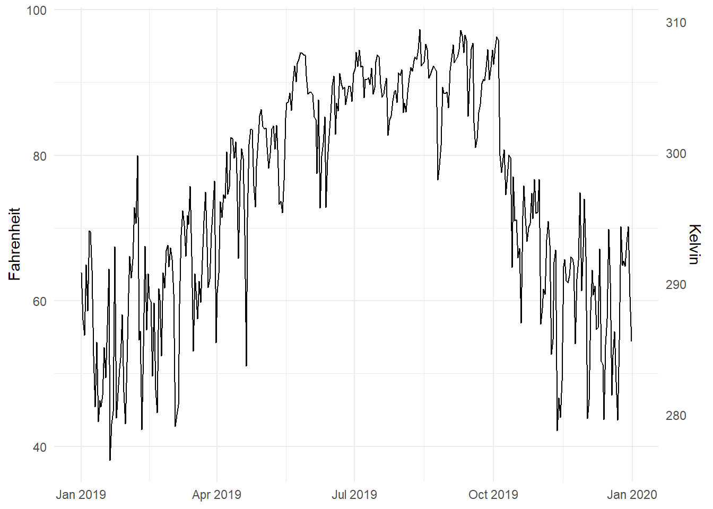

library(tidyverse) # For ggplot, dplyr, and friends
library(patchwork) # For combining ggplot plots
weather_atl <- read_csv("/data/atl-weather-2019.csv")Visualization
Supplemental Visualization
Combining plots using Patchwork
A good alternative to using two y-axes is to use two plots instead. The patchwork package makes this really easy to do with R. There are other similar packages that do this, like cowplot and gridExtra, but I’ve found that patchwork is the easiest to use and it actually aligns the different plot elements like axis lines and legends. The documentation for patchwork is really great and full of examples—you should check it out to see all the things you can do with it!
First, we load the libraries and data we’ll be using. We loaded the Atlanta weather data in Example 05:
To use **patchwork**, we need to (1) save our plots as objects and (2) add them together with `+`.
For instance, is there a relationship between temperature and humidity in Atlanta? We can plot both:
::: {.cell}
```{.r .cell-code}
# Temperature in Atlanta
temp_plot <- ggplot(weather_atl, aes(x = time, y = temperatureHigh)) +
geom_line() +
geom_smooth() +
scale_y_continuous(sec.axis = sec_axis(trans = ~ (32 - .) * -5/9,
name = "Celsius")) +
labs(x = NULL, y = "Fahrenheit") +
theme_minimal()
temp_plot# Humidity in Atlanta
humidity_plot <- ggplot(weather_atl, aes(x = time, y = humidity)) +
geom_line() +
geom_smooth() +
labs(x = NULL, y = "Humidity") +
theme_minimal()
humidity_plot:::
Right now, these are two separate plots, but we can combine them with + if we load patchwork:
library(patchwork)
temp_plot + humidity_plotBy default, patchwork will put these side-by-side. We can specify that we want the plots to be oriented over/under:
temp_plot / humidity_plot
Or we can change the orientation with the plot_layout() function:
temp_plot + humidity_plot +
plot_layout(ncol = 1)
We can also play with other arguments in plot_layout(). If we want to make the temperature plot taller and shrink the humidity section, we can specify the proportions for the plot heights. Here, the temperature plot is 70% of the height and the humidity plot is 30%:
temp_plot + humidity_plot +
plot_layout(ncol = 1, heights = c(0.7, 0.3))Legal dual y-axes
It is fine (and often helpful) to use two y-axes if the two different scales measure the same thing, like counts and percentages, Fahrenheit and Celsius, pounds and kilograms, inches and centimeters, etc.
To do this, you need to add an argument (sec.axis) to scale_y_continuous() to tell it to use a second axis. This sec.axis argument takes a sec_axis() function that tells ggplot how to transform the scale. You need to specify a formula or function that defines how the original axis gets transformed. This formula uses a special syntax. It needs to start with a ~, which indicates that it’s a function, and it needs to use . to stand in for the original value in the original axis.
Since the equation for converting Fahrenheit to Celsius is this…
\[ \text{C} = (32 - \text{F}) \times -\frac{5}{9} \]
…we can specify this with code like so (where . stands for the Fahrenheit value):
~ (32 - .) * -5 / 9Here’s a plot of daily high temperatures in Atlanta throughout 2019, with a second axis:
ggplot(weather_atl, aes(x = time, y = temperatureHigh)) +
geom_line() +
scale_y_continuous(sec.axis = sec_axis(trans = ~ (32 - .) * -5/9,
name = "Celsius")) +
labs(x = NULL, y = "Fahrenheit") +
theme_minimal()For fun, we could also convert it to Kelvin, which uses this formula:
\[ \text{K} = (\text{F} - 32) \times \frac{5}{9} + 273.15 \]
ggplot(weather_atl, aes(x = time, y = temperatureHigh)) +
geom_line() +
scale_y_continuous(sec.axis = sec_axis(trans = ~ (. - 32) * 5/9 + 273.15,
name = "Kelvin")) +
labs(x = NULL, y = "Fahrenheit") +
theme_minimal()
Interesting and excellent real world examples
- The Stories Behind a Line
- Australia as 100 people: You can make something like this with d3 and the potato project.
- Marrying Later, Staying Single Longer
How to select the appropriate chart type
Many people have created many useful tools for selecting the correct chart type for a given dataset or question. Here are some of the best:
- The Data Visualisation Catalogue: Descriptions, explanations, examples, and tools for creating 60 different types of visualizations.
- The Data Viz Project: Descriptions and examples for 150 different types of visualizations. Also allows you to search by data shape and chart function (comparison, correlation, distribution, geographical, part to whole, trend over time, etc.).
- From Data to Viz: A decision tree for dozens of chart types with links to R and Python code.
- The Chartmaker Directory: Examples of how to create 51 different types of visualizations in 31 different software packages, including Excel, Tableau, and R.
- R Graph Catalog: R code for 124 ggplot graphs.
- Emery’s Essentials: Descriptions and examples of 26 different chart types.
General resources
- Storytelling with Data: Blog and site full of resources by Cole Nussbaumer Knaflic.
- Ann K. Emery’s blog: Blog and tutorials by Ann Emery.
- Evergreen Data: Helful resources by Stephanie Evergreen.
- PolicyViz: Regular podcast and site full of helpful resources by Jon Schwabisch.
- Visualising Data: Fantastic collection of visualization resources, articles, and tutorials by Andy Kirk.
- Info We Trust: Detailed explorations of visualizations by RJ Andrews, including a beautiful visual history of the field.
- FlowingData: Blog by Nathan Yau.
- Information is Beautiful: Blog by David McCandless.
- Junk Charts: Blog by Kaiser Fung.
- WTF Visualizations: Visualizations that make you ask “wtf?”
- The Data Visualization Checklist: A helpful set of criteria for grading the effectiveness of a graphic.
- Data Literacy Starter Kit: Compilation of resources to become data literate by Laura Calloway.
- Seeing Data: A series of research projects about perceptions and visualizations.
Visualization in Excel
- How to Build Data Visualizations in Excel: Detailed tutorials for creating 14 different visualizations in Excel.
- Ann Emery’s tutorials: Fantastic series of tutorials for creating charts in Excel.
Visualization in Tableau
Because it is focused entirely on visualization (and because it’s a well-supported commercial product), Tableau has a phenomenal library of tutorials and training videos. There’s a helpful collections of videos here, as well.